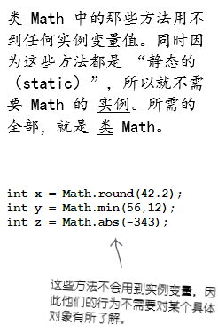
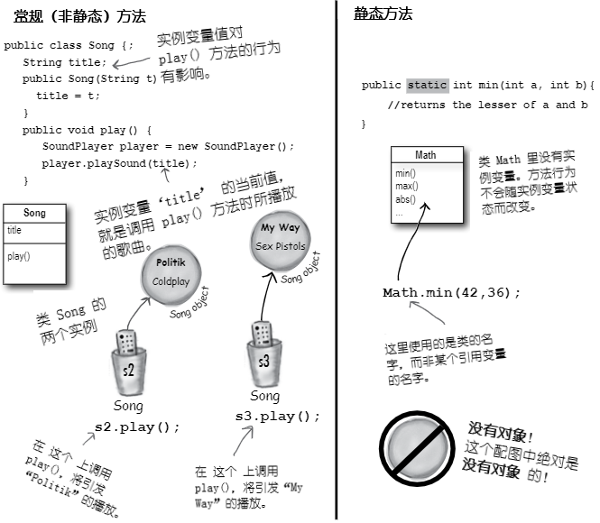
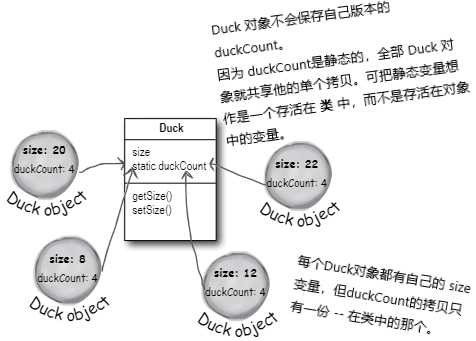
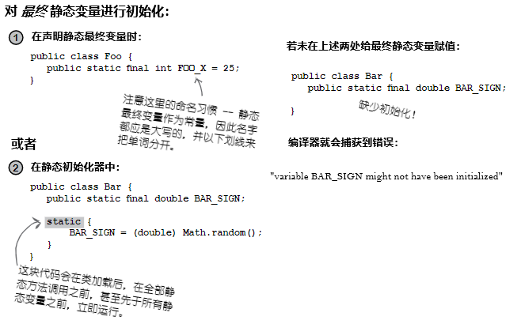
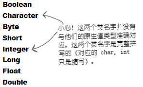
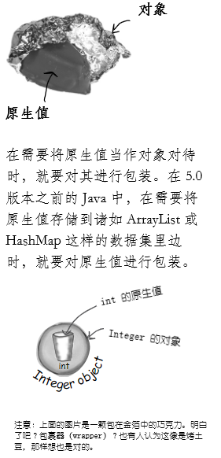
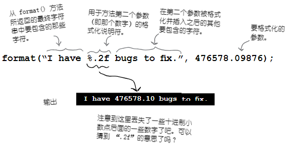
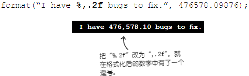
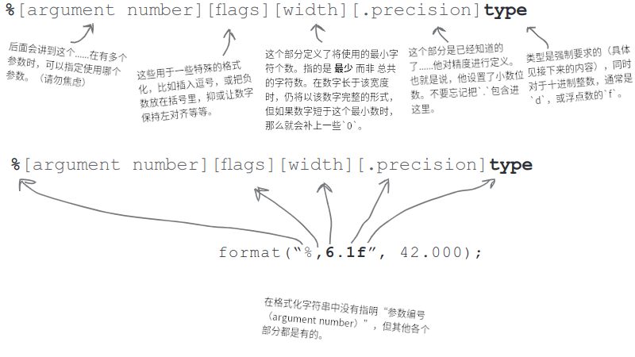

数字与静态值：数字为要
Numbers and Statics: Numbers Matter
做运算（Do the Math）。除了原生算术运算，数字方面还有更多的要做。可能要获取某个数字的绝对值，或对某个数字四舍五入，或者找出两个数中较大的等等。还可能希望只打印某个数的两位小数，或者要在大数中放进逗号，从而让大数更易于阅读。日期又该怎样处理呢？或许要以各种方式来打印日期，甚至要对日期进行 操作（manipulate），比如“把今天的日期加上三周”。还有怎样把字符串解析到数字呢？或是把数字转换成字符串？有幸的是，Java API 提供了很多易于上手的数字处理方法（full of handy number-tweaking methods）。但这些方法大多是 静态的（static），因此先要了解某个变量或方法为静态时，以及 Java 中的常量 -- 静态最终变量，是什么意思（But most of them are static, so we'll start by learning what it means for a variable or method to be static, including constants in Java -- static final variables）。
数学方法：接近全局方法
MATH methods: as close as you'll ever get to a global method
虽然 Java 中不存在全局的 任何东西。但请想想：有个不依赖实例变量值的方法会怎样。就拿类 Math 中的 round() 方法来说。他会每次都会执行相同的操作 -- 将浮点数（该方法的参数）四舍五入到最接近的整数。每次都这样的。就是有一万个类 Math 的实例，都运行 round(42.2) 方法，得到的结果都是 42。每次都是。也就是说，方法在参数上执行，而绝不会受某个实例变量状态影响。改变方法 round()运行方式的唯一值，就是传递给该方法的参数！
看起来为了运行 round() 方法而构造一个类 Math 的实例，确实是浪费了很多高价值的内存堆空间吧？对于 其他 一些 Math 的方法，比如接收两个数字原生值并返回二者中较小的值的 min()，或 max()，或者返回某个数的绝对值的 abs()等等，又会怎样呢？
这些方法绝不会用到实例变量值。事实上类 Math 是没有任何实例变量的。那么构造一个类 Math 的实例就没有任何价值。所以猜猜会怎样？所以就不必构造类 Math 的对象。事实上也无法构造类Math的实例。
在尝试构造类 Math 的实例时：
Math mathObj = new Math();
将得到这个错误消息：
Math() has private access in java.lang.Math
该错误消息显示，
Math构造器是被标记为private的！那就是说，绝 不可以在类Math上写new来构造一个新的Math对象。

图 1 - 类Math的方法
常规（非静态）方法与静态方法的区别
虽然Java作为面向对象语言，不过后面就会发现一个特殊案例，尤其是那些工具方法（就像这些Math的方法），在这些地方就没有必要用到类的实例。关键字 static 让方法在 没有任何其所属类的实例 情况下，就可以运行。静态方法就是指 “其行为不依赖实例变量，因此不需要实例或对象。只需要类就行”。

图 2 - 常规方法与静态方法的区别

图 3 - 静态方法与非静态方法的调用
让类具有静态方法有什么意义？
通常（尽管不总是这样），有着静态方法的类，都是些不打算被实例化的类（Often(although not always), a class with static methods is not meant to be instantiated）。在第8章就谈到过抽象类，以及如何使用 abstract 关键字类对类进行标记，从而使得任何人都不可以在那个类类型上写 new。也就是说，绝无可能对抽象类进行实例化。
到这里，还可以通过将构造器标记为 private，来阻止其他代码对 非抽象类进行实例化了。请记住，标记为 private 的方法意味着只有类中的代码才可以运行那个方法。标记成 private 的构造器，基本与标记为 private 的方法一样 -- 只有类中的代码才可以运行构造器。那么在类 外部 就没有人可以对类写 new 了。这就是类 Math 的运作方式。他的构造器是私有的，就不能构造出 Math 的实例。编译器了解你的代码是不能访问私有构造器的。
这又并不是说，有着一个或多个静态方法的类，绝对不会被实例化。事实上，只要放入了一个 main() 方法，那个类中就有了一个静态方法！
通常是要构造一个 main() 方法来启动或测试另一个类的，几乎总是要在 main() 方法中去实例化某个类，且随后会在构造的新实例上运行某个方法。
因此虽然存在一个非静态方法，就意味着一定有某种构造类实例的方式，但在类中结合静态和非静态方法一起使用，是自由的。获取新对象的唯二方式，是通过关键字 new，或者逆序列化（deserialization, 或称为Java Reflection API，附录会讲到）。此外并无他法。不过还有一个非常有趣的问题，那就是到底是 谁 来写下 new，后面会讨论这个问题。
静态方法不能使用非静态（实例）变量！
Static methods can't use non-static (instance) variable!
静态方法的运行，无需对其所属类的任何特定实例有所了解。就如同前面所说的，静态方法所属类甚至没有实例变量。因为静态方法是使用 类（Math.random()），而非 实例引用变量 （t2.play()）调用，所以静态方法就不能引用其所属类的任何实例变量。
若尝试编译这样的代码：
class Duck {
private int size;
public static void main (String [] args) {
System.out.format("Size of duck is %s\n", size); // 哪个 Duck? 谁的 size ?
} // 若在内存堆上的某处有个 Duck, 这里也是对其一无所知的
public void setSize (int s) {
size = s;
}
public int getSize () {
return size;
}
}
将收到这样的错误信息：
non-static variable size cannot be reference from a static context
在某个静态方法中尝试使用实例变量时，编译器就会想 “我不知道你讲的是哪个对象的实例变量”！就算在内存堆上有 10 只鸭子，静态方法也对他们一无所知。
静态方法也不能使用非静态方法！
非静态方法是用来做什么的？非静态方法通常要使用实例变量的状态，来影响他们自己的行为。getName()方法，返回的是变量 name 的值。谁的名字？当然是用于运行 getName() 方法的那个对象的 name。
这段代码不会被编译：
class Duck {
private int size;
public static void main (String [] args) {
System.out.format("Size of duck is %s\n", getSize()); // 调用 getSize () 方法只是推迟了必然会出现的问题 -- getSize() 使用了实例变量 size
}
public void setSize (int s) {
size = s;
}
public int getSize () {
return size; // 这里又回到同样的问题......到底是谁的 size ？
}
}
错误信息：
non-static method getSize() cannot be reference from a static context
答疑
- 去调用那些不使用任何实例变量的非静态方法会怎么样，编译器会允许吗？
不行。编译器对是否在非静态方法中有没有使用实例变量清楚得很。设想如果那样可以通过编译，而又在未来的某一天，修改了非静态方法的实现而带进了实例变量，会有什么影响？或者更离谱，在某个子类重写了那个非静态方法，并在重写版本中带入了一个实例变量呢？
- 对天发誓，见到过使用引用变量，而并非类名字去调用静态方法的代码。
是可以那样做，但就跟你妈妈经常教导你那样，“仅仅因为它是合法的并不意味着它是好的（Just because it's legal doesn't mean it's good）”。虽然使用类实例去调用静态方法可行，但这样写会构造出带误导性（缺乏可读性）代码。你可以这样写：
Duck d = new Duck ();
String[] = {};
d.main(s);
这段代码是合法的，但编译器只会将这段代码解析回真正的类（“好的”，
d的类型为Duck，同时main()是静态的，那么我就会调用类Duck中的静态main()）。也就是说，使用实例d来运行main()并不会让main()对这个引用的对象d有更多具体知识。这只是另一种调用静态方法的方式而已，方法本身仍然是静态的！
故有诗云：
红玫瑰
开得晚
实例变量的状态
静态方法见不到
静态变量：对类的 所有 实例，其值保持一致
Static variable: value is the same for ALL instances of the class
设想打算数一下程序运行时创建了多少个 Duck 的实例。怎样才能做到呢？或许需要一个在构造器中递增的实例变量？
clas Duck {
int duckCount = 0;
Duck () {
duckCount++; // 这会在每次构造出一个 Duck 时，将 duckCount 设置为 1
}
}
这样写是做不到的，因为duckCount是个实例变量，对每个 Duck都是以 0 开始的。当然可以再构造另一个类来完成 Duck 的计数，但那样就显得笨拙。这个时候就需要一个只有某变量的单份拷贝，且所有实例变量都共享那份拷贝的类。
这就是静态变量可以给到的特性：可被所有类实例共享的值。也就是说，每个类一个值，而非每个实例一个值（In other words, one value per class, instead of one value per instance）。
class Duck {
private int size;
private static int duckCount = 0; // 这个静态变量 `duckCount` 只会在类第一次加载时初始化
// 而不会在每次构造新实例时初始化
Duck () {
duckCount++; // 因为 duckCount 是静态的，且不会被重置为 0
// 所以现在静态变量 duckCount 就会在 Duck 构造器每次运行时递增
}
public void setSize (int s) {
size = s;
}
public int getSize () {
return size;
}
}

图 4 - 实例变量与静态变量的区别
静态变量是共享的。
同一类的所有实例，共享静态变量的单个拷贝。
- 实例变量：每个 实例 一个
- 静态变量：每个 类 一个
脑力锻炼
在本章早先部分，我们见到了私有构造器表示类不可被类外部的代码实例化。也就是说，只有类里面的代码，才可以使用私有构造器，构造类的新实例。（这里就有了“鸡生蛋蛋生鸡”问题。）
若要编写一个只能构造一个实例，且要使用类实例的所有人，就都只能使用这单个的实例，会怎样呢？
静态变量的初始化
Initializing a static variable
静态变量是在 类加载 的时候初始化的。而类的加载，则是 JVM 判定应该加载他的时候，才加载的。通常情况下，JVM加载某个类，是因为第一次有人尝试构造那个类的新实例，或者使用该类的静态方法或静态变量。作为 Java 程序员，当然还有显式地让JVM去加载某个类的选项，不过极不可能需要去那样做的。在几乎所有情况下，都最好让JVM去决定何时加载类。
同时静态变量初始化有两条定律：
- 类中的静态变量，是在类的所有对象可被创建出来之前初始化的
- 类中的静态变量，是在类的所有静态方法运行之前初始化的
class Player {
static int playerCount = 0; // playerCount 是在类 Player 加载时初始化的。
private String name; // 这里显式将其初始化为 0，不过并不需要，因为整数
// 的默认值本来就是 0。静态变量获取默认值的方式，与
// 实例变量是一样的。
Player (String n) {
name = n;
playerCount++; // 已声明但未初始化的静态变量与实例变量，他们的默认值
} // 一样：
} // 原生整数（长整形、短整型等）：0
// 原生浮点数（单精度、双精度）：0.0
// 布尔值：false
public class PlayerTestDrive { // 对象引用变量：null
public static void main (String[] args) {
System.out.println(Player.playerCount);
Player one = new Player ("Tiger Woods");
System.out.println(Player.playerCount);
} // 对静态变量的访问，就如同对静态
} // 方法的访问 -- 使用类的名字。
运行结果：
$ java -jar target/com.xfoss.learningJava-0.0.1.jar
0 <-- 在没有构造任何实例时
1 <-- 在构造了一个对象后
静态最终变量即为常量
static final variables are constants
标记为 final 的变量，就意味着 -- 一旦被初始化 -- 就绝不会再改变。也就是说，静态最终变量的值，从类被加载开始，就始终保持一致。查看 Java API 中的 Math.PI ，就会发现：
public static final double PI = 3.1415926535889793;
变量 PI 被标记为 public 表示所有代码都可以访问他。
标记为static就无需类 Math 的实例就可以使用（还要记住不能创建类 Math的实例）。
还因为 PI 是不会改变的，因此变量 PI 又被标记为了 final（就Java 这个编程语言来说）。
除了上面这种方式，就再没有其他方式将变量指定为常量了，但对常量命名的约定，可以帮助我们识别出其为常量。常量的名字，应全为大写！
静态初始化器（static initializer），是一个在类加载时，于外部代码可以使用这个类前，运行的一个代码块，因此这个代码块就是对静态最终变量进行初始化的好地方。
class Foo {
final static int X;
static {
X = 42;
}
}

图 5 - 静态最终变量 -- 常量，与静态初始化器
final 不止于 static 变量
也可使用关键字 final 去修改非静态变量，包括实例变量、本地变量，甚至方法的参数。在每种情况下，关键字 final 都意味着同样的事情：再也不能改变值了。还可以使用关键字 final 去阻止别人重写方法，或构造子类。
final的那些非静态变量
class Foof {
final int size = 3; // 现在就再不能修改 size 了
final int whuffie;
Foof () {
whuffie = 42; // 这里是不能修改 whuffie 的
}
void doStuff (final int x) {
// 就无法改变 x 了
}
void doMore () {
final int z = 7;
// 就无法改变 z 了
}
}
实际上这里有个问题。其中的
final int whuffie;语句中的whuffie实例变量，其默认值不是0吗？怎么后面又可以再构造器中赋值呢？说明构造器是最先运行的。
final的方法
class Poof {
final void calcWhuffie () {
// 必须保证不被重写的
// 一些重要事务
}
}
final的类
final class MyMostPerfectClass {
// 这个类就不能被扩展了
}
final的 变量，就是说不能修改他的值。
final的 方法，就是说不能重写这个方法。
final的 类，就是说不能对这个类进行扩展（即不能构造他的子类）。
答疑
- 静态方法不能访问非静态变量。那么非静态方法可以访问静态变量吗？
当然，类中的非静态方法，总是可以调用类中的静态方法，以及类的静态变量。
- 将类标记为
final的目的是什么？这样做不就与面向对象的整体目标相违背了吗？
是的，不会。将类构造成
final的典型原因，是为了安全性。比如就无法构造类String的子类。设想有人扩展了类String，并以多态方式，在原本是String对象的地方，使用他们自己的String子类对象，会是多大的麻烦。在需要一些方法保持特定实现时，就要把他们的类标记为final。
- 如果类已经是
final了，那么再把其中的方法标记为final，不就是多余的吗？
在类为
final时，就不需要将方法标记为final了。想想吧 -- 在类为final时，就不能被扩展为子类，那么当然他的方法就不能被重写了。此外，在确实打算允许其他人对你编写的类进行扩展，又不想要他们重写其中的一些而不是全部的方法时，就可以不将这个类整个标记为
final，而是有选择性地将特定方法标记为final就行了。最终方法指的就是子类不能对其进行重写。
知识点
-
调用静态方法应使用类名字，而不是对象引用变量：
Math.random()与myFoo.go() -
无需堆上静态方法所属类上的任何实例变量，就可以运行静态方法；
-
对于不依赖特定实例变量值的那种工具性方法，写成静态方法是不错的选择；
-
静态方法不与特定实例关联 -- 而只与类关联 -- 因此静态方法就访问不到其所属类的所有实例变量。静态方法不知道该去使用那个实例的值；
-
静态方法无法访问到非静态方法，这是因为非静态方法通常是与实例变量状态关联起来的；
-
在类只有静态方法时，就不希望整个类被实例化，从而可将类构造器标记为
private； -
静态变量是类的全体实例共享的变量。类中的静态变量只有一份拷贝，而不是实例变量那样每个实例都有一份拷贝；
-
静态方法可以访问静态变量；
-
在 Java 语言中要构造一个常量，是将某个变量同时标记为
static与final实现的； -
最终静态变量必须被赋值，要么在声明时，要么在某个静态初始化器中。
static {
DOG_CODE = 420;
}
- 常量（
finalstaticvariables）的命名约定是要将名字全部大写； - 标记为
final的变量，一经赋值后就不能在改变了； - 给某个
final的实例变量赋值，要么在该变量声明时，要么在构造器中； final的方法不能被重写；final的类无法被扩展（子类化操作）。
类Math的那些方法
既然已经知道静态方法工作的方式，不如现在来看看类 Math中的一些静态方法。这里举例的只是其中一些常用的。对照 API 文档，就可以查看到剩余的那些，包括 sqrt()、tan()、ceil()、floor()以及 asin()等等。
Math.random()
返回一个
0.0到1.0（不包括1.0）之间的双精度数。
double r1 = Math.round();
int r2 = (int) (Math.random() * 5);
Math.abs()
返回一个双精度数，为参数的绝对值。该方法有多个过载方法，因此如果传入的是整数，那么返回的也是整数；传入的是双精度数，返回的也是双精度数。
int x = Math.abs(-240); // 返回 240
double d = Math.abs(240.45); // 返回 240.45
Math.round()
返回参数被取整到最近的整数或长整数（取决于参数是单精度或是双精度数）。
int x = Math.round(-24.8f); // 返回 -25
int y = Math.round(24.45f); // 返回 24
//请记住，浮点数在没有加上字母 ‘f’ 时，默认都假定是双精度数
Math.min()
返回两个参数中较小的数。该方法也具有多个过载方法，用于接收整数、长整数、单精度浮点数或双精度数。
int x = Math.min(24, 240); // 返回 24
double y = Math.min(90876.5, 90876.49); // 返回 90876.5
Math.max()
与
Math.min()类似，返回两个参数中的较大值。也是过载的方法。
对原生值进行包装
Wrapping a primitive
一些时候要将原生值当作对象来对待。比如在 Java 早于5.0的全部版本中，是无法把原生值直接放入到 ArrayList或 HashMap等数据结构中去的：
int x = 32;
ArrayList list = new ArrayList();
list.add(x); // 在 5.0 之前的 Java 版本中，这样写是不行的！！
// 那个时候 ArrayList 还没有 add(int) 方法
// 来接收整数！（那个时候的 ArrayList 只有
// 接收对象引用变量，而非原生值的 add() 方法）
每种原生值类型都有一个打包类，且因为这些打包类都是在 java.lang 包中，所有不必导入他们。由于这些类的名字，都是将（全小写字母的）原生值类型的首字母改为大写得来，因此就很容易识别和区分这些类。
由于某种无人所知的原因，JAVA API 设计者们，决定了不把这些类的名字，按照原生值类型与类类型准确地映射起来（Oh yeah, for reasons absolutely nobody on the planet is certain of, the API designers decided not to map the names exactly from primitive type to class type）。后面就会明白这句话说的是什么。

图 6 - 原生类型包装类的名字：例外

图 7 - 什么是原生值包装类
在 5.0 版本之前的 Java 中，就不得不自己去做...
太TM愚蠢了，那时候不能构造整数的
ArrayList？必须把每个整数都包装成新的Integer对象，然后再在要访问ArrayList中的值的时候，从Integer对象解包为 整数？这样真是浪费时间，并必然会出错的......
在先于 5.0 版本的所有 Java 版本中，原生值就是原生值，对象引用就是对象引用，二者直接绝不会视为可互换的（In all versions of Java prior to 5.0, primitives were primitives and object references were object references, and they were NEVER treated interchangeably）。都是依赖程序员去完成打包和解包。并无将原生值传递给期望得到对象引用变量的方法，也没有方法来把方法返回的对象引用变量，直接赋值给原生值变量 -- 就算是返回的引用变量指向的是一个 Integer对象，要赋值的是个原生的 int 变量也是不行的。Integer与int两个类型之间，就是没有联系，而实际上 Integer是有一个类型为 int 的实例变量的（用于保存 Integer 所包裹的原生值）。这些事情，都有由程序员来亲自做。
一个原生整数的 ArrayList
在没有 “自动装箱” 特性时（Java 5.0 之前的版本）
public void doNumsOldWay () {
ArrayList listOfNumbers = new ArrayList (); // 构造一个 ArrayList。（请记住，在 5.0 之前是无法
// 指定类型的，因此所有的 ArrayList 都是 Object 的
// 清单）
listOfNumbers.add(new Interger(3)); // 是不能将原生值 '3' 加入到清单的，因此
// 必须首先将其包装为一个 Integer
Integer one = (Integer) listOfNumbers.get(0); // 从 listOfNumbers 这个 ArrayList 中出来的
// 是个 Object, 不过可以将其强制转换为 Integer
int intOne = one.intValue(); // 终于可以从 Integer 得到整个原生值了。
}
自动装箱：模糊原生值与对象之间的界线
Autoboxing: bluring the line between primitive and object
Java 5.0 加入进来的自动装箱特性（the autoboxing feature），就可以 自动 完成原生值到包装对象的转换！
下面瞧瞧在构造一个保存整数的 ArrayList 时，发生了什么。
一个原生整数的 ArrayList
有着自动装箱时（Java 5.0 及以后的版本中）
public void doNumsNewWay () {
// 构造一个类型为 Integer 的 ArrayList
ArrayList<Integer> listOfNumbers = new ArrayList<Integer>;
listOfNumbers.add(3); // 这样就加入进去了！
// 尽管 ArrayList 中没有 add(int) 的方法，编译器
// 仍然为你做了所有包装（打包）的工作。也就是说
// 现在确实有一个 Integer 对象存储在这个 ArrayList
// 中了，只不过这里 “假装” ArrayList 接收的是整数而已
// （既可以把整数，也可以把 Integer 对象添加到
// ArrayList<Integer>中去）
int num = listOfNumbers.get(0);
// 编译器还会自动将 Integer 对象解包，从而可将整数值直接赋值到原生变量
// 无需调用 Integer 对象上的 intValue() 方法
}
- 既然要保存
ints, 为什么不声明一个ArrayList<int>呢？
因为...不可以这样。请记住，泛型规则（the rule for generic types）就是，你只能指定的，仅为类或接口的类型，并非原生类型。因此
ArrayList<int>是不会被编译的。不过就如同上面的代码，实际上这并不重要，因为编译器允许把整数放到ArrayList<Integer>中去。事实上，在使用兼容Java 5.0 的编译器时，对于把原生值放入到清单为原生值包装类类型的ArrayList，是没有办法阻止的，也因为在这样的编译器下，自动装箱是默认启用的。那么就可以把原生布尔值放入到ArrayList<Boolean>中，把字符放入到ArrayList<Character>里。
自动装箱几乎无处不在
Autoboxing works almost everywhere
自动装箱特性不光是可以完成数据集（a collection）中原生值的打包和解包......还可以让我们在几乎所有期望得到原生值，或原生值包装的任何地方，去方便地直接二者互用。这就非常方便了！
自动装箱的乐趣
- 作为方法的参数使用
在某个方法接收原生值包装类类型时，既可以传递一个引用变量，也可以直接传递一个与包装类类型匹配的原生值。反之依然 -- 在某个方法接收原生值时，既可以传递一个兼容的原生值，也可以传递一个原生值类型对应的包装类类型的引用变量。
- 在返回值处运用
在某个方法声明了一个原生的返回类型时，既可以返回一个兼容的原生类型值，也可以返回一个声明的原生类型对应的包装类类型的引用变量。反之依然，在某个方法声明了一个原生的包装类类型时，既可以返回一个引用变量，也可以返回一个兼容原生类型的值。
- 在布尔表达式中运用
在希望得到一个布尔值的任何地方，都既可以使用一个可以计算得到布尔值的表达式（比如：
4 > 2），也可以直接使用一个原生布尔值，还可以使用一个到Boolean包装类的对象引用变量。
- 在数字运算中的运用
这可能时最奇怪的运用了 -- 是的，运算中即使期望的是原生值，但仍然可以使用包装类类型。这就意味着可以把自增运算符（
++）运用在类Integer的对象上！但不必焦虑，这只是编译器的小把戏。并没有对Java语言本身进行修改来支持这样的在对象上应用运算符的特性；编译器只是在执行运算前，简单地把对象转换成了对象的原生值类型。不过这看起来还是很奇怪的。
Integer i = new Integer(42);
i++;
同样可以这样写：
Integer j = new Integer (5);
Integer k = j + 3;
- 用在赋值中
可把包装类类型对象或原生值，赋值给匹配的包装类类型引用变量或原生值。比如，一个原生值的
int变量，就可以赋值给一个Integer类类型的引用变量，反之亦然。
下面的这个 TestBox 类，可以通过编译，但运行时会报错。
package com.xfoss.learningJava;
public class TestBox {
Integer i;
int j;
public static void main (String [] args) {
TestBox t = new TestBox ();
t.go();
}
public void go () {
j = i;
System.out.format("j is %s\n", j);
System.out.format("i is %s\n", i);
}
}
错误信息为：
$ java -jar target/com.xfoss.learningJava-0.0.1.jar
Exception in thread "main" java.lang.NullPointerException
at com.xfoss.learningJava.TestBox.go(TestBox.java:13)
at com.xfoss.learningJava.TestBox.main(TestBox.java:9)
等等！还有些东西呢！这些包装类还有自己的静态工具方法！
But wait! There's more! Wrappers hava static utility methods too!
除了可以像普通类那样行事，包装类还有一大堆相当有用的静态方法。前面就用到过一个 -- Integer.parseInt()。
这些解析方法接收一个字符串，并返回一个原生值。
把字符串转换成原生值就很容易：
String s = "2";
int x = Integer.parseInt(s); // 把 “2” 解析为 2 是没问题的。
double d = Double.parseDouble("420.24");
boolean b = Boolean.parseBoolean("True");
// Java 1.5 中新的 parseBoolean() 方法会忽略那个字符串参数中的大小写字母。
但如果这样写：
String t = "two";
int y = Integer.parseInt(t); // 噢。这可以通过编译，但在运行时会报错。所有不能被解析为数字的
// 的东西，都将导致一个 NumberFormatException 的报错
将收到这样的运行时例外：
$ java -jar target/com.xfoss.learningJava-0.0.1.jar
Exception in thread "main" java.lang.NumberFormatException: For input string: "two"
at java.base/java.lang.NumberFormatException.forInputString(NumberFormatException.java:65)
at java.base/java.lang.Integer.parseInt(Integer.java:652)
at java.base/java.lang.Integer.parseInt(Integer.java:770)
at com.xfoss.learningJava.TestBox.go(TestBox.java:13)
at com.xfoss.learningJava.TestBox.main(TestBox.java:9)
对字符串进行解析的所有方法或构造器，都可能抛出 NumberFormatException。这是运行时例外，因此可以不必对其加以处理或进行例外声明。不过或许会想要对其进行处理或进行例外声明的。
（在下一章就会讲到例外
Exception。）
现在反过来......把原生值转换成字符串
And now in reverse......turning a primitive number into a String
把数字转换成字符串的方法有好几种。最容易的就是，把数字直接连接到一个既有的字符串上。
double d = 42.5;
String doubleString = "" + d; // 请记住这里的 ‘+’ 运算符，是 Java 中唯一的一个过载的
// 运算符，在这里是一个字符串连接器。所有添加到某个字符串
// 的东西，都将被字符串化。
double d = 42.5;
String doubleString = Double.toString(d); // 另一种使用类 Double 中静态方法 toString()
// 的方式
数字的格式化操作
Number formatting
在 Java 语言中，对数字进行格式化，不必与 I/O 相关联。细想一下。把数字展示给用户的一种典型方式，就是经由 GUI 途径。把数字放在一个滚动的文本框、或者在表格里。若把格式化写在打印语句中，那么就根本没办法把数字格式化到可以在 GUI 中很好呈现的字符串了。在 Java 5.0 之前的版本中，大部分的格式化操作，是通过 java.text 包中的类来完成的，而这个包在现在版本的本书中甚至没有提及，因为现在Java中已经不是这样的了。
在 Java 5.0 中，Java 团队通过 java.util 包中的 Formatter 类，带来了更加强大且灵活的格式化功能。不过无需自己去创建和调用Formatter类上的方法，因为Java 5.0 已经将一些便捷方法，添加到部分 I/O 类（包括 printf()）及String类了。因此调用 String.format()并把需要格式化的东西，以及格式化指令传递给他，就变得相当简单了。
当然，还是必须知道该怎样去提供这些格式化指令，同时如果对 C/C++ 中的 printf() 函数不熟悉，那就要费点劲儿了。幸运的是，就算不知道printf()，也可以按照指引，完成一些最基本的格式化操作（就是这里所展示的）。但如果要进行混合与匹配，来得到想要的全部，那么就要对printf()有所掌握了。
下面以一个基本例子开始，并在其后看看数字格式化是怎样运作的。（注意：在 I/O 那一章，将再度回顾格式化）
- 将数字格式化为逗号分组样式
Formatting a number to use commas
package com.xfoss.learningJava;
public class TestFormats {
public static void main (String [] args) {
// '1234567890' -- 要格式化的数字
// 这里希望让他有些逗号
System.out.format("%,d\n", 1234567890);
// "%,d" 就是用于指示如何对作为第二个参数的数字（在
// 此示例中，就是一个整数）进行格式化的指令。
// 请记住，format() 方法仅有两个参数 -- 第一个逗号是
// 在字符串字面值（the String literal, "%,d"）里面的
// 因此这个逗号，与第二个逗号不同，他不是把参数分开
// 提供给 format() 方法的。
}
}
输出：
$ java -jar target/com.xfoss.learningJava-0.0.1.jar
1,234,567,890
于是就得到了插入到数字中的多个逗号了。
对格式化的解构
Formatting deconstructed...
在格式化的最底层（At the most basic level），包含了两个主要部分（当然还有其他东西，不过这里为了简明目的，只讨论两个）：
-
格式化指令，Formatting instructions
使用了特定的，用于描述如何对参数进行格式化的 格式化说明符（You use special format specifiers that describe how the argument should be formatted）。
-
要格式化的参数，The argument to be formatted
虽然可以有多个参数，但这里会从一个开始。这个参数并非任何类型都可以的...... 只能是可以使用前面格式化指令的格式化说明符可以格式化的。比如在格式化指令指定了一个 浮点数 时，就不能传入一个
Dog，甚至一个看起来像浮点数的String也是不可以的。注意：假如已经了解
C/C++中的printf()函数，那么只要跳过接下来的本节的内容就好。
图 8 - 解构格式化
那么这些指令到底说了什么呢？
“取该方法的第二个参数，并将其作为一个十进制整数进行格式化，并插入 逗号 （Take the second argument to this method, and format it as a decimal and insert commas）”。
这些指令是怎样来描述的呢（How do they say that）？
接下来的内容将深入分析语法 "%, d" 的具体意义，但对于初学者来说，当你在某个格式化字符串（a format String, 格式化字符串始终是 format() 方法的第一个参数）中，看到百分号（%）时，把他想作表示某个变量就行了，而这个变量就是format()方法的第二个参数。百分号后其余的字符，描述的就是那个参数的格式指令。
百分号（%）说，“在这里插入参数”（并使用这些指令来对参数进行格式化）
System.out.format("%, d", 1234567890);
// 注意：这里的 "%, d" 和 "%,d" 有区别
// "%," 和 "d" 之间，只能有两种情况：
// 1. 什么也没有
// 2. 一个空格
// 不能有其他任何字符，包括转义字符
// 两个空格都不可以

图 9 - %.2f示例
百分号 % 告诉格式化器（the formatter）把format() 方法的另一个参数（即那个数字），插入到这里，并 使用百分号后的 .2f字符对其进行格式化。随后将格式化字符串的其余部分，添加到最终输出。
加上一个逗号

图 10 - "%,.2f"示例
注意：浮点数加入逗号，只会在整数部分，小数部分始终不会添加逗号。
System.out.format("I have %,d bugs to fix.\n", 476578.09876);
上面的语句，可以通过编译，但会报出运行时例外报错：
Exception in thread "main" java.util.IllegalFormatConversionException: d != java.lang.Double
那么到底是怎样知道指令在何处结束，以及剩余字符从哪里开始的呢？又为何没有把
"%.2f"中的f打印出来呢？怎样才知道.2f是格式化指令的一部分，而不是字符串的一部分的呢？
格式化字符串，使用了他自己的小语言语法（The format String uses its' own little language syntax）
显然在百分号 % 后面是不能放上任意字符的。跟在百分号后面的东西的语法，要遵循非常明确的规则，这些百分号后面的部分，描述了对要插入到结果（已格式化）字符串的那个点上的参数，如何进行格式化（The syntax for what goes after the percent sign follows very specific rules, and describes how to format the argument that gets inserted at that point in the result(formatted) String）。
已经见到的两个示例：
%,d是指“插入逗号，并把那个数字作为十进制整数进行格式化”
以及
%.2f指 “将那个数字作为具有两位小数精度的浮点数进行格式化”
还有
%,.2f指 “插入逗号，并将那个数字作为具有两位小数精度的浮点数进行格式化”
真正的问题在于，“怎么知道，到底该在百分号后面放上什么，才能让 format() 按照自己的想法去执行？” 这就包括了对这些符号的掌握（比如d表示十进制，而f表示浮点数），以及百分号后面的指令放置顺序。比如在把逗号放在d后面，就像这样%d,，而不是%,d，就不会工作的！
或者说，下面这个语句会输出什么呢：
String.format("I have %.2f, bugs to fix.", 476578.09876);
其输出为：
I have 476578.10, bugs to fix.
格式化说明符（The format specifier）
百分号后面直到类型指示符（the type indicator, 比如d或f），且包含类型指示符在内，就是格式化指令部分（part of the formatting instructions）。在类型指示符后，格式化器（the formatter）假定其余的字符集，是作为输出字符串的部分了，直到他遇到另一个百分号（%）。嗯......可能会在遇到百分号吗？可以有多个被格式化的参数变量吗？此时现把这个问题放一放；很快就会回到这个问题。现在就来看看格式化说明符 -- 就是百分号后面，描述参数该如何格式化的东西，他的语法。
格式化说明符可以有最多5个不同的部分（不包括%在内）。下面的在 [] 中的每一样，都是可选的，因此只有百分号（%）和类型是必须的。不过他们的顺序也有强制要求，因此要用到的任何部分，都必须以这个顺序放置。

图 11 - 格式化指示符，The format specifier
唯一必需的说明符是类型（The only required specifier is for TYPE）
虽然类型是唯一必需的说明符，但请记住若放入了其他任何部分时，类型都必须放在最后！类型修饰符（type modifiers）有十余种之多（还不包括日期和时间，他们有自己的修饰符集），但绝大多数时候，都会用到 %d（十进制）或 %f（浮点数）。且通常会将%f与精度指示符（a precision indicator）结合使用，来设置输出中所要的小数位数。
类型是强制要求的，其他都是可选的。
%d-- 十进制数
format("%d", 42);
// '42.25' 就不会工作！这与尝试
// 直接把双精度数赋值给整数变量
// 一样。
这里的参数，必须与整数兼容，因此就只有 byte、short、int与char（或者他们的包装类类型）。
%f-- 浮点数
format("%.3f", 42.000000);
// 这里将 'f' 与精度指示符 '.3'结合
// 因此输出就以 3 个 '0' 结束
参数必须是某种浮点类型，因此就只有单精度数和双精度数（原生值或包装类类型），还有一种叫做 BigDecimal的类类型。
%x-- 十六进制数
format("%x", 42);
输出：
2a
这里的参数必须是 byte、short、int、long（包括他们的原生值和包装类类型），以及 BigInteger 类类型。
%c-- 字符
format("%c", 42);
// 数字 '42' 表示了字符 '*'
这里的参数必须是 byte、short、char 或 int（包括他们的原生值与包装类类型）。
不止一个参数时会发生什么呢？
设想需要一个看起来像这样的字符串：
“排名为 100,567,890.24 中的第 20,456,654 位。”
而其中的数字则是来自变量。应该怎么办呢？只需在格式化字符串（第一个参数）后加上两个参数就可以了，那就意味着调用 format() 时，会有三个参数，而不再是两个了。在第一个参数（即格式化字符串）内部，将有两个不同的格式化说明符（两个都以%开头）。第一个格式化说明符将插入该方法的第二个参数，同时第二个格式化说明符会插入该方法的第三个参数。也就是说，格式化字符串中的变量插入，使用的是其余参数传入到format()方法的先后顺序。
int one = 20456654;
double two = 100567890.248907;
// 这里演示了格式化说明符种的第一个标志（flag），第一个标志可以是 '<', 'n$'（其中'n'是参数编号，从1开始）
System.out.format("排名为 %,.2f(%<,.4f, %1$f) 中的第 %,d(%2$16d) 位。\n", two, one);
按照图11 中的说明，似乎格式化字符串（the format String）中的格式化说明符（the format specifier）中的第一个标志（总共四个标志），可以指定使用哪个参数变量的。
到了日期格式化，就会看到可能会对同一参数变量运用不同格式化说明符的情况。在了解日期是如何格式化（与这里的数字格式化正好相反）之前，是很难设想这样的情况的。马上就会了解这方面的内容，就会看到怎样来更精细地控制哪个格式化说明符与哪个参数相对应。
- 这里可真是有些奇怪的东西呢。就是到底可以传入多少个参数？我的意思是，在
String类中到底有多少个format()的重载方法呀？那么在把10个的参数传递给某个单独的输出字符串进行格式化时，会发生什么呢？
问得好。是的，这里确实有了一些奇怪的东西（至少是新东西，且与以往有所不同），然而并不存在一堆的过载
format()方法，用来处理未知个数的参数变量。为了支持Java语言中的这个新的格式化功能（类似printf），Java 语言就需要另一个新特性 -- 可变参数清单（variable arguments list） （简称为varargs）。对于设计良好的系统，基本不会用到这个可变参数清单特性。
讲了这么多的数字，关于日期又是怎样的呢？
设想需要这样的一个字符串："2004年11月28日，星期天"。
是不是并没有什么特别的？好吧，如果全部从一个 Date -- Java中可以表示时间戳的类，类型的变量开始呢，现在就要取用这样的一个对象（与数字有所不同），并将其发送给格式化器。
数字与日期格式化的主要不同，在于日期的各种格式，都使用到一种以t开头的两字符的类型（a two-character type，这一点与数字格式化中使用的 d 或 f 是不同的）。下面的几个示例，可以给你一个日期格式化的运作有大致了解：
- 完整的日期和时间 --
%tc
String.format("%tc", new Date());
输出为：
周日 12月 26 16:48:23 CST 2021
- 只显示时间 --
%tr
String.format("%tr", new Date());
输出为：
04:51:24 下午
- 显示周几，几月，几日 --
%tA,%tB,td
并没有单个的格式化说明符，来实现这里要求的显示内容，因此就要结合其中三个：周几（%tA）、月份（%tB），以及几号（%td）。
Date today = new Date();
String.format("%tA, %tB %td", today, today, today);
// 这个逗号不是格式化的部分......他只是
// 这里希望在第一个插入的格式化参数之后
// 打印出来的一个字符。
的输出为：
星期日, 十二月 26
不过这样写意味着必须传递
today这个Date对象三次，对于格式化的每个部分，都有传递一次。换句话说，其中的%tA只会给到周几，随后还不得不再次传递today来获取月份，之后还要为获取几号再传递。
这样写:
System.out.format("%tA, %tB %td", now);
会报出告警：
[WARNING]
java.util.MissingFormatArgumentException: Format specifier '%tB'
- 与上一个相同，但无需重复的参数 --
%tA, %<tB %<td
Date today = new Date();
String.format("%tA, %<tB %<td", today);
这里的简括符
<，只是说明符中的一个标志，他告诉格式化器去 “再次使用上一个参数（use the previous argument again）”。如此就避免了参数的重复，而是对同一个参数，进行三次不同方式的格式化。可以把这样的用法想作是在
today这个日期对象上调用三个不同的读取器（getter），来获取这个日期对象的三个不同片段的数据。
处理日期数据
Working with Dates
来看看这个问题......如果项目是从二月27号开始，八月5号结束，期间有多数个工时呢？
对于日期数据，除了获取当前日期外，往往还有更多的方面需要处理。比如需要程序去调整日期、找出已使用的时间、排定优先级、进度告警（heck）以及构建进度表等等。那么就需要具备一些工业能力的日期处理能力。
当然可以构造自己的一套日历......（还请不要搞忘了那些闰年！）还有那些时不时的、讨厌的润秒。这样一来情况就会变得很复杂了。不过好消息是 Java API有着丰富的、可帮助对日期进行处理的一些类。甚至有的时候感觉这些类过于丰富了......
在时间中穿梭
Moving backward and forward in time
假设公司的工作安排是周一至周五。安排的任务是找出今年各个日历月中的最后一个工作日......
这样看来java.util.Date，实际上就落伍了......
早先使用了 java.util.Date类来找出当天的日期，那么逻辑上看，这个类在需要一些临时日期处理能力时，比较适合，但只有翻阅一下 API 文档，就会发现 Date 的大部分方法，都已经弃用了！
在获取一个表示当前日期和时间的对象，因此在想要表达“给我当下（give me NOW）”时，就要用到的时间戳时，类Date仍是一个不错的选择。
在需要一个“现在”的时间戳时，使用类
Date。除此之外，都用类Calendar。
好消息时，API推荐使用 java.util.Calender 来代替类 Date，所以就要检视一下这个类：
使用 java.util.Calendar 来操作日期
Calendar API 的设计者们，希望从全局、字面上进行思考（The designers of the Calendar API wanted to think globally, literally）。基本概念是在与日期打交道时，就会请求一个日历系统（通过类Calendar的一个静态方法），同时 JVM 把一个Calendar具体子类的实例递送回来。（Calendar实际上是一个抽象类，因此总是与某个具体子类打交道。）
更有趣的时，所获取到的日历系统类别，将适配你的语言环境（More interesting, though, is that the kind of calendar you get back will be appropriate for your locale）。世界上大部分地区都使用的是格里历，而如果不在使用格里历的地区，也可以让 Java 库处理其他的比如佛历、伊斯兰历法或日本历法（Much of the world uses the Gregorian calendar, but if you're in an area that doesn't use a Gregorian calendar you can get Java libraries to handle other calendars such as Buddhist, or Islamic or Japanese）。
标准 Java API 本身带有 java.util.GregorianCalendar类，因此这里将使用格里历。大部分情况下，都不需要了解所使用的 Calendar资料属于何种类别，而是要关注类 Calendar的那些方法。
获取一个对类 Calendar进行扩展的对象
Getting an object that extends Calendar
要获取某个抽象类的“实例”时，该怎么办呢？当然不会像下面这样，这样写是不行的：
这 不会 工作：
Calendar cal = new Calendar();
// 编译器不会允许这样干的！
而是要使用静态的 getInstance() 方法：
Calendar cal = Calendar.getInstance();
// 到这里这个语法应该看起来不陌生了 --
// 这里运行了一个静态方法。
关于 call 和 invoke：前者是 “调用”，后者是 “运行”。
等一下。既然不能构造类
Calendar的实例，那到底赋值给那个Calendar类型的引用变量了什么呢？
确实不能获取到一个类 Calendar 的实例，但可以获取一个Calendar具体子类的实例呀。
显然是无法获取到类 Calendar 的实例的，因为Calendar是一个抽象类。但对于调用 Calendar的静态方法没有影响，仍可以自由调用，因为静态方法是在类上，而不是某个特定实例上调用的。因此对Calendar类上的getInstance()方法进行调用，同时这个方法返回......一个具体子类的实例。这个实例对 Calendar进行扩展（也就是说这个实例可以多态地赋值给 Calendar类型的引用变量），且根据合约，这个实例还可以对类 Calendar的那些方法进行响应。
在世界上大多数地方，同时大多数的 Java版本，都将从getInstance()获取到一个 java.util.GregorianCalendar的实例。
运用 Calendar 对象
为了运用好 Calendar 对象，就需要理解几个关键概念：
- 字段保存 状态（Fields hold state） --
Calendar类类型的对象，有着多个用于表示其最终状态、日期与时间等的字段。举例来说，可以设置某个Calendar的 年份 或者 月份； - 日期和时间，是可以 增加 的 -- 类
Calendar有一些允许对不同字段的值进行加减的方法，比如“在月份上加一”，或“减去三年”； - 日期和时间可以 毫秒 表示 -- 类
Calendar允许把日期转换成其毫秒表示，以及把毫秒表示转换成日期形式。（需要指出的是，毫秒表示指从 1970年元旦到具体日期的毫秒数。）这样既可以执行诸如“两个时间之间所经历的时间”，或者“在此时间上加63小时23分12秒”等这样的精确计算。
运用 Calendar对象的示例：
Calendar c = Calendar.getInstance();
// 将时间设置为 2022年1月7日，15：40：01（注意月份是从零开始的）
c.set(2022, 0, 7, 15, 40);
// 把这个时间转换成一个相当大的毫秒数
//（Convert this to a big ol' amount of milliseconds.）
long day1 = c.getTimeInMillis();
System.out.format("以毫秒表示: %,d，正常表示：%s\n", day1, c.getTime());
// 加上相当于一个小时的毫秒数，随后更新这个时间。
// （注意这里的 '+='，作用与 day1 = day1 + ... 一样的）
day1 += 1000*60*60;
c.setTimeInMillis(day1);
System.out.format("新的几点钟： %d\n", c.get(c.HOUR_OF_DAY));
// 在日期上加 35， 这就会把我们带到二月份。
c.add(c.DATE, 35);
System.out.format("加上了35天后： %s\n", c.getTime());
// 在此日期上往前“滚动” 35天。此操作把日期往前滚动 35天，但不会改变月份！
c.roll(c.DATE, 35);
System.out.format("往前滚动 35 天： %s\n", c.getTime());
// 这里没有进行增减，而只是对日期字段执行了一个 “设置”。
c.set(c.DATE, 1);
System.out.format("日期设置到 1 号： %s\n", c.getTime());
输出为：
$ java -jar target/com.xfoss.learningJava-0.0.1.jar
以毫秒表示: 1,641,541,202,162，正常表示：Fri Jan 07 15:40:02 CST 2022
新的几点钟： 16
加上了35天后： Fri Feb 11 16:40:02 CST 2022
往前滚动 35 天： Fri Feb 18 16:40:02 CST 2022
日期设置到 1 号： Tue Feb 01 16:40:02 CST 2022
此输出就确认了以上的 getTimeMillis()、add()、roll()以及set()等方法是如何运作的。
注意：The
java.util.Calendar.roll()method adds(up) or subtracts(down) a single unit of time on the given time field without changing larger fields. -- Java API这个方法有点古怪。
Calendar API的一些亮眼之处
Highlights of the Calendar API
上面刚粗略涉及了类 Calendar 中的一些字段及方法。Calendar作为一个大型API，因此这里只能展示一些会用到的最常用字段与方法。在理解了下面的少数几个字段与方法后，就应该能够游刃有余地使用这个API了。
-
Calendar类的关键方法-
add(int field, int amount)在该日历字段上加减时间。
-
get(int field)返回给定日历字段的值。
-
getInstance()返回一个
Calendar类类型对象，这里可以指定一个语言环境（locale）。 -
getTimeInMillis()
以长整型数形式，返回此
Calendar对象的时间毫秒数。 -
roll(int field, boolean up)在不改变较大字段的情况下加上或减去时间（Adds or subtracts time without changing larger fields）。
-
set(int field, int value)对给定
Calendar字段进行设置。 -
set(year, month, day, hour, minute)（全为整数）set()方法的一个常用变种，用来设置一个完整时间。 -
setTimeInMillis(long millis)使用一个长整型的时间，来设置某个
Calendar类类型对象的时间。 -
其余...
-
-
Calendar类的关键字段-
DATE/DATE_OF_MONTH获取/设置日期中的几号。
-
HOUR/HOUR_OF_DAY获取/设置 12 小时或 24 小时值。
-
MILLISECOND获取/设置毫秒数。
-
MINUTE获取/设置分钟。
-
MONTH获取/设置月份。
-
YEAR获取/设置年份。
-
ZONE_OFFSET以毫秒数形式，来获取/设置与GMT的偏移量（Get/set raw offset of GMT in millis）。
-
更多字段......
-
更多的静态！......静态的导入
Even more Statics!...static imports
这是 Java 5.0 引入的新特性......这是是喜忧参半的一个特性。一些人喜爱这个主意，另一些则讨厌这个点子。静态导入之所以存在，只是因为他可以节省一些按键输入的时间。在讨厌键盘输入时，就可能会喜欢上这个特性。静态导入的弊端就是 -- 在不注意的时候 -- 他们的使用会造成代码难于阅读。
静态导入背后的基本概念就是，只要使用到静态类、静态变量，或者枚举变量（关于枚举变量，后续会涉及，an enum），就可以将其导入进来，从而节省一些键盘输入。
一些老式代码：
import java.lang.Math;
class NoStatic {
public static void main(String [] args) {
System.out.println("sqrt " + Math.sqrt(2.0));
System.out.println("tan " + Math.tan(60));
}
}
具有静态导入特性时的代码：
// 在声明静态导入时，所用到的语法
import static java.lang.System.out;
import static java.lang.Math.*;
class WithStatic {
public static void main(String[] args){
out.println("sqrt " + sqrt(2.0));
// 运作中的静态导入
out.println("tan " + tan(60));
// 运作中的静态导入
}
}
注意事项（Caveats & Gotchas）
在只打算为数不多地使用某个静态成员时，为了让代码更具可读性，建议避免使用静态导入；
在要大量使用某个静态成员时（比如要执行大量的数学计算），这个时候使用静态导入可能就不错；
注意在静态导入声明中，可以使用通配符（
.*）；静态导入的一个大问题是，容易造成命名冲突（A big issue with static imports is that it's not too hard to create naming conflicts）。 比如，在两个不同类都有
add()方法时（Math和Calendar就是这样的情况），编译器和你自己就不知道到底该使用那个add()方法了。
围炉夜话
Fireside Chats
今日主题：实例变量鄙视静态变量
Tonight's Talk: An instance variable takes cheap shots at a static variable
- 实例变量（IV，Instance Variable）：我甚至不明白为什么我们会在这里讨论。人人皆知静态变量只用在常量上。有几个静态变量啊？我想整个的 API 也就只有四个吧？又没人会用到。
- 静态变量（SV，Static Variable）：你真的应该检讨一下了。你都多久没有关注 API 了啊？API整个就是由静态加载的（It's frickin' loaded with statics）！API的一些类，全部都保存的常量值。比如就有一个名为
SwingConstants的类，其中就全是常量值。 - IV：全都是。当然了，你还可以讲出来好几个这样子的。不错，在
Swing库中是有几个这样的，但大家都知道Swing只是个特殊案例。 - SV：那可能只是个特例，但他确实是个重要的东西！那类
Color又怎么说？为了构造那些标准颜色去记住各种 RGB 数值，会不会很痛苦呢？可是类Color已经有着预先定义好的各种颜色了。这就非常方便了啊。 - IV：好吧，不过除了这少数几个 GUI 的东西外，请举个人人都会实实在在用到静态变量的例子好吗。在具体场合会用到的。
- SV：新手会用到的
System.out怎么样？System.out中的out就是类System的一个静态变量。就代码编写者本人而言，并没有构造新的System的实例，只是请求System提供了他的out变量。 - IV：好吧，这也不过是另一个特殊用例。而且除了调试之外，没人会用到那个的。
- SV：哦，难道程序调试不重要吗？ 有些东西绝对是心胸狭隘的你不知道的 -- 请接受吧，静态变量更具效率。静态变量是每个类有一个的，而不像实例变量，是一个实例一个。这样节省下来的内存，是多么巨大！
- IV：嗯，你是不是搞忘了什么？
- SV：什么？
- IV：静态变量天生就是反面向对象的吧！既然要使用静态变量，那为何不倒退回去，使用过程编程呢（Static variables are about as un-OO as it gets!! Gee why not just go take a giant backwards step and do some procedural programming while we're at it）？
- SV：你说反面向对象是什么意思？
- IV：你静态变量就像是个全局变量，但凡是个程序员，就知道那通常不是件好事（any programmer worth his PDA knows that's usually a Bad Thing）。
- SV：我不是全局变量。Java里根本就没有全局变量。我是存活在类中的！你应该明白，类是一个相当面向对象的东西。我只是呆在那里，在内存空间中的某个地方；我是对象状态的一个天数部分；唯一区别在于，我是类的全体对象所共有的。非常有效率。
- IV：你是存活在类中，不过人们并没有把Java叫做面向类的编程。那样叫得多蠢。你就是个遗迹。你得存在是为了让那些旧时代的程序员过渡到 Java（You're a relic. Something to help the old-timers make the leap to java）。
- SV：好吧就此打住。你真是一派胡言。某个系统的一些静态变量，对于系统至关重要。就算是不那么重要的静态变量，也是为了编码的便利。
- IV：好吧，看起来静态变量/方法的使用似乎有点道理（Well, OK, every once in a while sure, it makes sense to use a static）。不过我告诉你，滥用静态变量（及方法），就是不成熟的面向对象程序员的标志。设计师应该考虑 对象 状态，而不是 类 的状态。
- SV：你说这个做什么？静态方法有什么问题吗？
- IV：静态方法是这中间最糟糕的了，因为使用静态方法常常意味着程序员是在进行过程思维，而没有以对象按照对象的独有状态来行事。
- SV：当然，我知道应该把对象作为面向对象涉及的焦点，但正是由于有那么些无知的程序员......请不要全盘否定过程编程好吧。静态变量/方法仍然有其存在的必要，同时在需要到他们时，他们可以说是无可比拟的（don't throw the baby out with the bytecode. There's a time and place for statics, and when you need one, nothing else beats it）。
- IV：好吧......你就自欺欺人吧（Riiiiiight. Whatever you need to tell yourself...）